Como ler a faixa de 12 ícones: cada ícone é um eixo e mostra o polo para onde o partido ou a organização pende. Quanto mais forte o ícone, mais intensa a posição. Passe o mouse para ver os valores.
- Estrutura
- Representação
- Poder
- Imigração
- Diplomacia
- Intervenção
- Economia
- Controle
- Comércio
- Religião
- Moral
- Tecnologia
Partidos
Partidos políticos, atuais e históricos, com a prática e as ideias de cada um.
A Esquerda (Die Linke)
Partido de esquerda alemão herdeiro do PDS da Alemanha Oriental, defende aumento do salário mínimo, congelamento de aluguéis, taxação de grandes fortunas, saída da OTAN e paz, e ressurgiu em 2025 com Heidi Reichinnek.
Ver perfilA França Insubmissa (LFI)
Partido de esquerda radical de Jean-Luc Mélenchon, defende a sexta República, planejamento ecológico, taxação dos ricos, saída da OTAN, ruptura com os tratados da UE e solidariedade com a Palestina, em estilo populista.
Ver perfil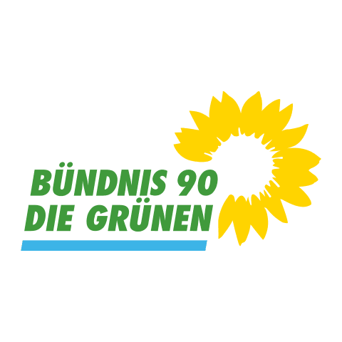
Aliança 90/Os Verdes
Partido ecologista alemão nascido do movimento pacifista, defende a transição energética, o clima, direitos de minorias e imigrantes e a Europa, e apoiou a Ucrânia com envio de armas ao governar com SPD e FDP.
Ver perfilAliança Renovadora Nacional (ARENA)
1965–1979Partido de sustentação do regime militar entre 1965 e 1979, apoiou no Congresso os generais presidentes com anticomunismo, segurança nacional, ordem e desenvolvimentismo autoritário, contra a oposição consentida do MDB.
Ver perfilAlternativa para a Alemanha (AfD)
Partido de direita radical fundado em 2013, anti-imigração, eurocético e nacionalista, defende fronteiras fechadas, saída de políticas climáticas e aproximação com a Rússia, e é vigiado por extremismo pelo serviço de inteligência.
Ver perfilAssociação de Auxílio ao Governo Imperial (Taisei Yokusankai)
1940–1945Organização política criada em 1940 pelo príncipe Konoe, que dissolveu os partidos e mobilizou o Japão imperial para a guerra. Reuniu associações de vizinhança, sindicatos e burocratas sob o culto ao imperador, o militarismo e a economia de guerra.
Ver perfil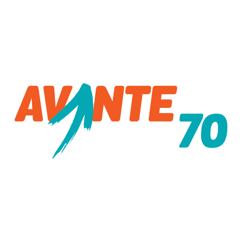
Avante
Partido pragmático de centro, fundado em 1989 como PTdoB e renomeado em 2017, com ideário trabalhista difuso, apoio a governos de campos diferentes e bancada pequena baseada em lideranças estaduais e na máquina de fundo partidário.
Ver perfilCentro Democrático (CD)
Partido de direita fundado em 2013 por Álvaro Uribe, seu líder, que reivindica o legado da Segurança Democrática. Governou com Iván Duque (2018–2022), liderou o "Não" ao acordo de paz de 2016, defende o mercado e valores tradicionais e apoia De la Espriella.
Ver perfilChega
Partido de direita radical português de André Ventura, fundado em 2019 e segunda força no Parlamento, defende imigração restrita, segurança, redução de impostos e crítica à corrupção, com discurso populista.
Ver perfilCoalizão Cívica (KO)
Coalizão liberal e pró-europeia de Donald Tusk, no governo da Polônia desde 2023. Defende Estado de direito, UE e NATO, forte apoio à Ucrânia, gastos militares altos, controle de fronteira com Belarus e economia de mercado com proteção social.
Ver perfilComunión Tradicionalista Carlista (CTC)
Partido carlista espanhol de linha tradicionalista, herdeiro do carlismo do século XIX. Defende monarquia legitimista, catolicismo integrista, foros regionais e o lema 'Deus, Pátria, Foros, Rei', contra o liberalismo e a democracia parlamentar.
Ver perfil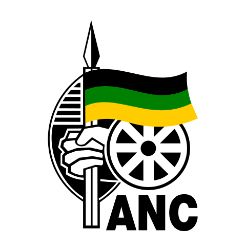
Congresso Nacional Africano (ANC)
Partido de Nelson Mandela e principal movimento contra o apartheid, governa a África do Sul desde 1994. Defende democracia não racial, redistribuição, empoderamento econômico negro e Estado desenvolvimentista, com crise de corrupção e energia.
Ver perfilCongresso Nacional Indiano (INC)
Partido de Gandhi e Nehru que liderou a independência da Índia e a governou por décadas, hoje na oposição ao BJP. Defende secularismo, bem-estar social, economia mista, pluralismo e federalismo.
Ver perfil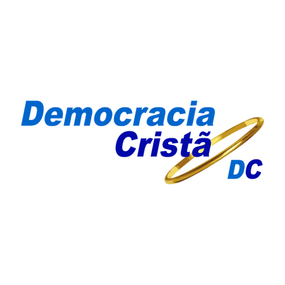
Democracia Cristã (DC)
Pequeno partido democrata-cristão com bandeiras de família, defesa da vida desde a concepção e fé cristã na vida pública, de economia moderada com proteção social, conhecido pelas candidaturas presidenciais de Eymael.
Ver perfil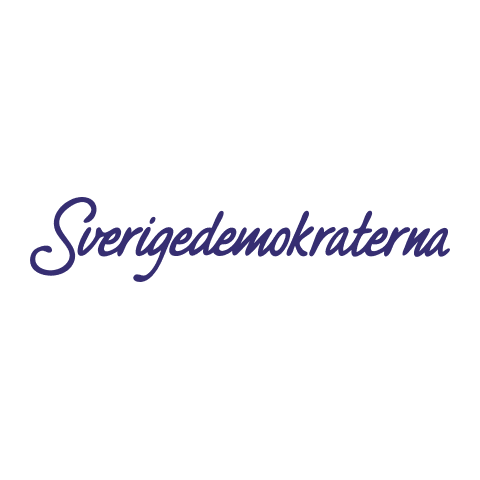
Democratas da Suécia (SD)
Partido nacionalista sueco de Jimmie Åkesson, segunda maior bancada, de raízes neonazistas moderadas desde os anos 1990, defende restrição à imigração, lei e ordem, bem-estar para suecos e é eurocético.
Ver perfilFidesz
Partido de Viktor Orbán, no poder desde 2010, defende a democracia iliberal, o nacionalismo cristão, o controle da mídia e do Judiciário, a oposição à imigração e a Bruxelas, e relações próximas com Rússia e China.
Ver perfil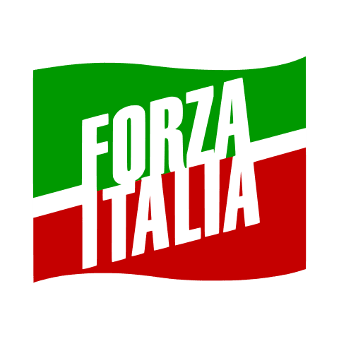
Forza Italia (FI)
Partido de centro-direita fundado por Silvio Berlusconi em 1994, defende liberalismo econômico, atlantismo, europeísmo e democracia cristã, integra o governo Meloni sob Antonio Tajani, com base empresarial e católica moderada.
Ver perfilFrente Amplio
Coalizão de esquerda nascida dos protestos estudantis de 2011 e do presidente Gabriel Boric, defende feminismo, ecologia, direitos sociais ampliados e o fim da herança neoliberal e da Constituição de Pinochet.
Ver perfilIrmãos da Itália (Fratelli d'Italia)
Partido de direita nacional-conservadora de Giorgia Meloni, primeira-ministra da Itália desde 2022, defende nação, família tradicional, controle da imigração e segurança, com atlantismo, apoio à Ucrânia e herança pós-fascista do MSI.
Ver perfilKuomintang (KMT)
Partido nacionalista chinês fundado em 1912, que governou Taiwan sob lei marcial até 1987 e hoje é a principal oposição. Defende o 'Consenso de 1992', maior aproximação econômica com a China, economia de mercado e os Três Princípios do Povo de Sun Yat-sen.
Ver perfilLa Libertad Avanza (LLA)
Partido de Javier Milei, presidente da Argentina desde 2023, de libertarianismo econômico, com motosserra no gasto público, desregulação e abertura comercial, guerra cultural contra a casta e o peronismo e alinhamento a Trump e a Israel.
Ver perfilLei e Justiça (PiS)
Partido nacional-conservador polonês de Jarosław Kaczyński, governou de 2015 a 2023, defende o catolicismo, a família, o bem-estar social, a soberania contra Bruxelas e a influência no Judiciário, com apoio à Ucrânia e contra a imigração.
Ver perfil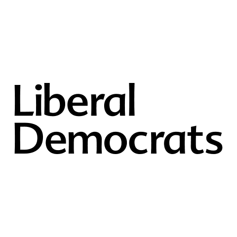
Liberais Democratas
Partido de centro liberal de Ed Davey, defende liberdades civis, Europa e reaproximação com a UE, saúde e assistência social, meio ambiente e reforma eleitoral, e governou em coalizão com os conservadores entre 2010 e 2015.
Ver perfil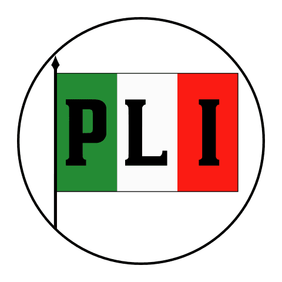
Liberais italianos (Giolitti)
1892–1922Liberais do Reino da Itália liderados por Giovanni Giolitti, cinco vezes premiê. Defenderam o parlamentarismo, o sufrágio masculino de 1912, a neutralidade do Estado nos conflitos de trabalho, a estatização de ferrovias e seguros, o protecionismo e a conquista da Líbia.
Ver perfilLiga dos Comunistas da Iugoslávia (SKJ)
1945–1990Partido único da Iugoslávia de Tito, de 1945 a 1990. Combinou ditadura de partido com autogestão operária, não alinhamento, federalismo entre as repúblicas e a unidade 'irmandade e unidade', e rompeu com Stálin em 1948.
Ver perfil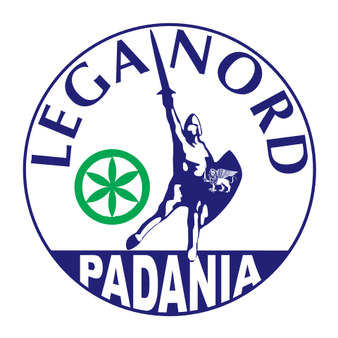
Liga Norte (Lega Nord)
1991–2018Partido regionalista do norte da Itália fundado por Umberto Bossi em 1991, defendeu o federalismo, a Padânia independente, o antiestablishment e o controle da imigração, até se tornar a Lega nacional de Salvini.
Ver perfilLikud
Partido nacionalista de direita fundado em 1973 e liderado por Benjamin Netanyahu, herdeiro do sionismo revisionista de Jabotinsky. Defende segurança dura, assentamentos, soberania sobre a Judeia e Samaria, economia de mercado e coalizões com a direita religiosa.
Ver perfilMDB
1966–1979Partido de oposição consentida ao regime militar, criado em 1966 sob o bipartidarismo, liderado por Ulysses Guimarães. Reuniu liberais, socialistas e católicos na defesa da democracia, da anistia e do fim da tortura, sob cassações e censura.
Ver perfil
Mencheviques
1903–1922Ala minoritária do Partido Operário Social-Democrata Russo, de Mártov e Plekhanov. Defendeu um partido aberto, uma revolução burguesa antes da socialista, democracia e aliança com liberais, participou do Governo Provisório e foi reprimida pelos bolcheviques.
Ver perfilModeraterna (M)
Partido liberal-conservador sueco, fundado em 1904 e liderado por Ulf Kristersson no governo Tidö. Defende impostos baixos, reformas de mercado, UE e NATO, mais polícia contra gangues e política de asilo e imigração restritiva.
Ver perfilMorena (Movimento Regeneração Nacional)
Partido de esquerda de López Obrador, governa o México com Claudia Sheinbaum, defende o Estado promotor do bem-estar, pensões e programas sociais, soberania energética, combate à corrupção e austeridade, com nacionalismo popular.
Ver perfil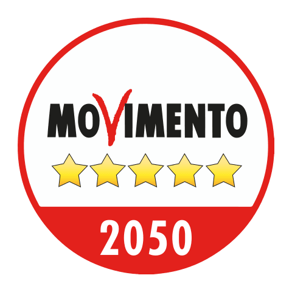
Movimento 5 Estrelas (M5S)
Movimento populista italiano fundado por Beppe Grillo em 2009 e hoje de Giuseppe Conte, defende democracia direta, renda de cidadania, ecologia e contra a casta, e tem postura pacifista e crítica das armas à Ucrânia.
Ver perfilMovimento Democrático Brasileiro (MDB)
Herdeiro do MDB que fez oposição ao regime militar, é um partido de centro pragmático com diretórios fortes nos estados, aliado de governos de todos os lados e apoiador de reformas liberais como o teto de gastos.
Ver perfilNuevas Ideas
Partido de Nayib Bukele, presidente de El Salvador, fundado em 2017, domina o Estado com o regime de exceção contra as gangues, populismo, discurso antiestablishment, bitcoin e forte concentração de poder no Executivo.
Ver perfil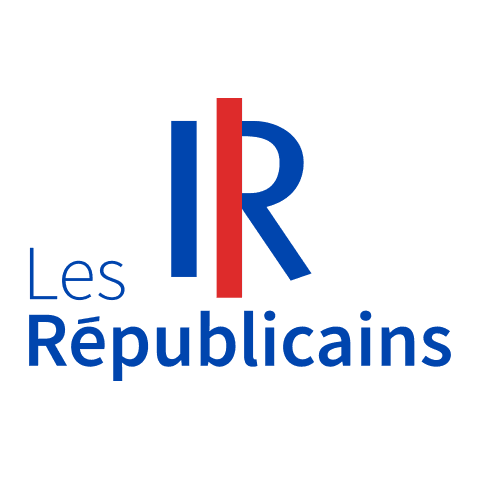
Os Republicanos (LR)
Partido de centro-direita francês, herdeiro do gaullismo e de Sarkozy, com Bruno Retailleau como líder desde 2025. Defende economia de mercado, controle da imigração, ordem, valores da família e uma UE intergovernamental, e perdeu o Palácio do Eliseu em 2012.
Ver perfil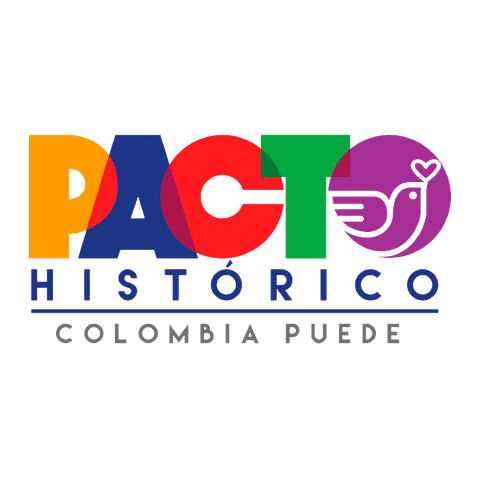
Pacto Histórico (PH)
Partido de esquerda de Gustavo Petro, que o criou como coalizão em 2021 e hoje o lidera. Base do seu governo, unificou-se em 2025 com o Polo Democrático, a União Patriótica e o Partido Comunista e é oposição a De la Espriella.
Ver perfilPartido Ação Nacional (PAN)
Partido mexicano de centro-direita fundado em 1939, de inspiração democrata-cristã. Defende democracia eleitoral, federalismo, livre mercado, abertura comercial e valores familiares, e elegeu os presidentes Fox e Calderón.
Ver perfilPartido Baath iraquiano
1968–2003Ramo iraquiano do Baath, no poder de 1968 a 2003 sob al-Bakr e Saddam Hussein. Ditadura de partido único com culto ao líder, nacionalismo árabe, economia estatizada do petróleo, guerras contra o Irã e o Kuwait e repressão de curdos e xiitas.
Ver perfil
Partido Baath sírio
1963–2024Ramo sírio do Baath, no poder de 1963 a 2024, sobretudo sob Hafez e Bashar al-Assad. Partido dirigente de um Estado laico e autoritário, de nacionalismo árabe, economia estatal, aliança com Irã e Rússia e repressão (Hama, guerra civil).
Ver perfil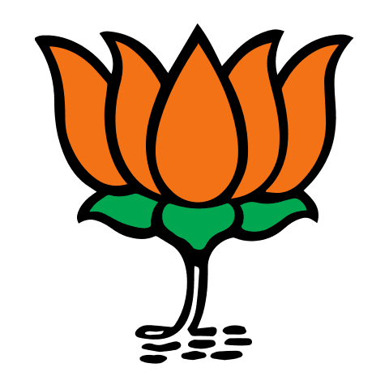
Partido Bharatiya Janata (BJP)
Partido nacionalista hindu de Narendra Modi, no poder na Índia desde 2014 e braço político do RSS. Combina hindutva, centralização do poder e liberalização econômica com assistencialismo, e revogou a autonomia da Caxemira em 2019.
Ver perfilPartido Colorado (ANR)
Partido conservador e populista paraguaio de 1887, hegemônico por décadas, inclusive na ditadura de Stroessner. Hoje governa com Santiago Peña, defendendo livre mercado, catolicismo, ordem, soberania sobre Itaipu e aliança com Taiwan.
Ver perfil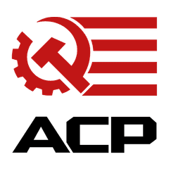
Partido Comunista Americano (ACP)
Partido marxista-leninista criado em 2024 por dissidentes do CPUSA, de Jackson Hinkle, admira China, Coreia do Norte, Irã e Rússia, defende o socialismo de Estado e mistura comunismo com conservadorismo social, o chamado comunismo MAGA.
Ver perfilPartido Comunista Brasileiro (PCB)
1930–1945Partido de Luís Carlos Prestes ligado à Internacional Comunista, liderou a Aliança Nacional Libertadora e a revolta de 1935, foi posto na ilegalidade e perseguido pelo Estado Novo, e apoiou os Aliados na Segunda Guerra.
Ver perfil
Partido Comunista da China
Partido único no poder desde 1949, combina leninismo, controle estatal da política, da mídia e da internet com economia de mercado dirigida, planejamento industrial, nacionalismo e modernização tecnológica.
Ver perfilPartido Comunista da China (era maoísta)
1949–1976Partido único da China sob Mao Tsé-Tung, de 1949 a 1976. Impôs coletivização, o Grande Salto Adiante, a Revolução Cultural, luta de classes permanente e culto ao líder, com ateísmo de Estado, ruptura com a URSS e bomba atômica.
Ver perfil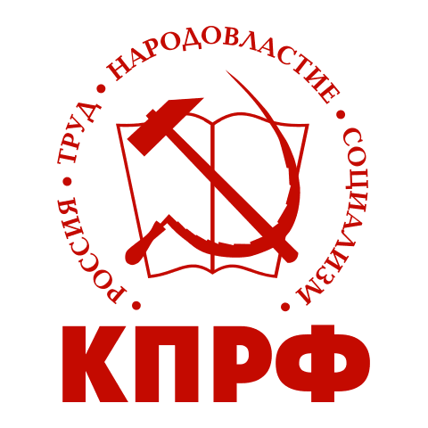
Partido Comunista da Federação Russa (PCFR)
Segunda maior força da Duma, de Gennady Zyuganov, herdeiro do PCUS, defende nacionalização, estatismo, memória soviética e nacionalismo russo, com apoio ao governo Putin na guerra, sem ser oposição real.
Ver perfil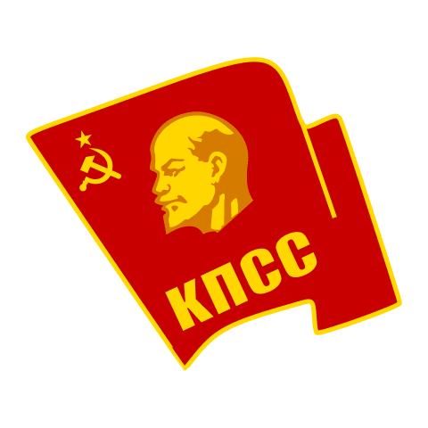
Partido Comunista da União Soviética (PCUS)
1917–1991Partido único de Lênin a Gorbachev, que governou a URSS com monopólio do poder, centralismo democrático e economia planificada. Impôs coletivização, terror stalinista, ateísmo de Estado e Guerra Fria até ser banido em 1991.
Ver perfilPartido Comunista de Cuba (PCC)
Partido único de Cuba, definido pela Constituição como força dirigente da sociedade, orienta a economia estatal planificada, a saúde e a educação universais, o antiimperialismo e a oposição ao embargo, sem pluralismo partidário.
Ver perfil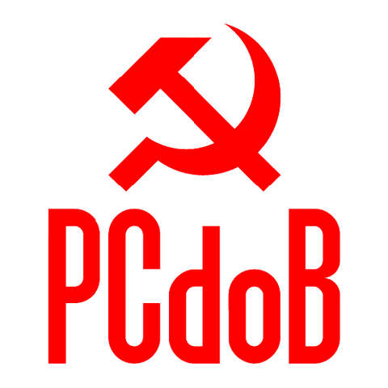
Partido Comunista do Brasil (PCdoB)
Partido marxista-leninista nascido da cisão de 1962 com o PCB, ligado à guerrilha do Araguaia, hoje federado ao PT, apoia governos Lula e defende planejamento estatal, soberania nacional e aproximação com a China.
Ver perfil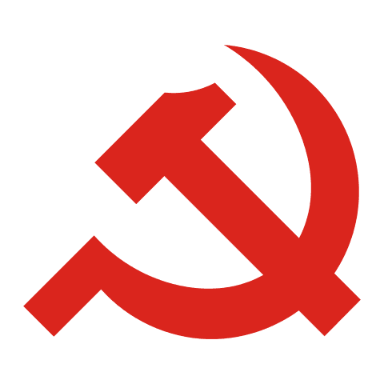
Partido Comunista do Vietnã (PCV)
Partido único do Vietnã, fundado em 1930 por Ho Chi Minh, no poder desde a reunificação de 1975. Combina leninismo e controle político com a abertura de mercado do Doi Moi, campanha anticorrupção e diplomacia de equilíbrio entre China, EUA e Rússia.
Ver perfilPartido Comunista dos EUA (CPUSA)
Fundado em 1919, ligado historicamente a Moscou, organizou sindicatos e lutas pelos direitos civis, foi perseguido no macarthismo e hoje apoia os democratas contra a direita, defendendo socialismo, sindicatos e Estado de bem-estar.
Ver perfil
Partido Conservador (era vitoriana)
1834–1901Partido dos Tories de Peel, Disraeli e Salisbury, defensor da Coroa, da Igreja Anglicana, da aristocracia fundiária e do império. Com a 'Nação Única' de Disraeli, aliou reforma social paternalista, voto ampliado e imperialismo.
Ver perfilPartido Conservador (Tories)
Partido de direita britânico de Thatcher, Cameron e Johnson, governou de 2010 a 2024, defende mercado, Brexit, monarquia, segurança e controle da imigração, com Kemi Badenoch na oposição.
Ver perfilPartido Conservador do Canadá
Partido de centro-direita criado em 2003, de Stephen Harper e hoje de Pierre Poilievre, defende impostos menores, segurança pública, produção de energia e o Oeste, com tom populista e conservadorismo social moderado.
Ver perfil
Partido Conservador do Império (Saquaremas)
1836–1889Partido do Império do Brasil conhecido como Saquaremas, da grande lavoura e da elite escravista. Defendeu o Estado centralizado, o Poder Moderador forte, o Conselho de Estado, a ordem pública e a escravidão, e conduziu a política imperial no Prata.
Ver perfilPartido da Ação Popular (PAP)
Partido dominante de Singapura, no poder desde 1959 e fundado por Lee Kuan Yew. Combina capitalismo de Estado, meritocracia tecnocrática, ordem social rígida, multiculturalismo oficial e democracia eleitoral de partido dominante.
Ver perfil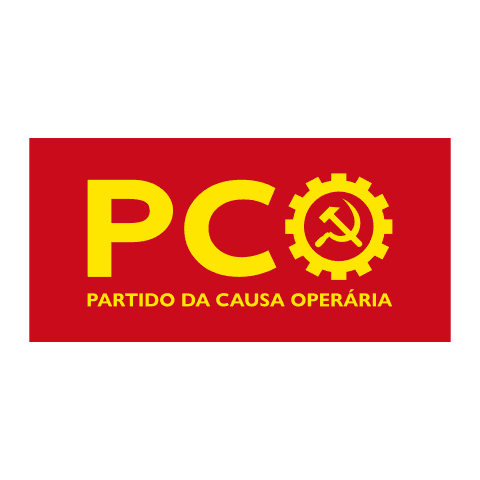
Partido da Causa Operária (PCO)
Partido de extrema-esquerda de tradição trotskista, dirigido por Rui Costa Pimenta, defende a estatização do sistema financeiro, o não pagamento da dívida e a soberania nacional, e critica o identitarismo e o PT.
Ver perfil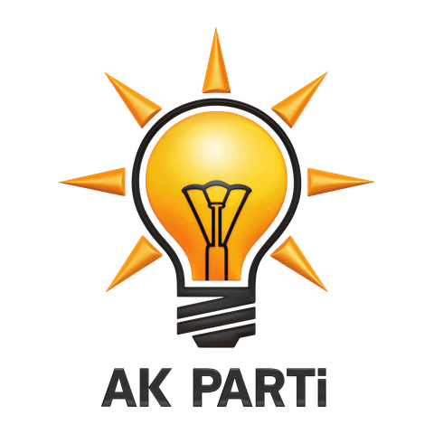
Partido da Justiça e Desenvolvimento (AKP)
Partido islâmico-conservador de Recep Tayyip Erdoğan, no poder na Turquia desde 2002, combina nacionalismo, valores religiosos, grandes obras e Estado forte, com presidencialismo, controle da mídia e do Judiciário e política externa assertiva.
Ver perfilPartido da Liberdade (PVV)
Partido de Geert Wilders, vencedor das eleições holandesas de 2023, defende fim da imigração e de asilo, contra o Islã, eurocético e populista, com bem-estar para holandeses e forte apoio a Israel.
Ver perfil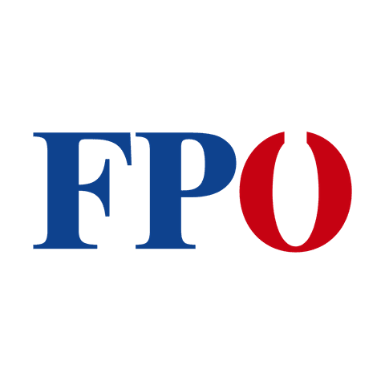
Partido da Liberdade da Áustria (FPÖ)
Partido de direita radical austríaco de Herbert Kickl, vencedor das eleições de 2024, defende imigração restrita, neutralidade, eurocetismo e a identidade austríaca, com ligações a Orbán e à Rússia.
Ver perfilPartido da Social Democracia Brasileira (PSDB)
Fundado em 1988 por dissidentes do MDB, governou com Fernando Henrique Cardoso (Plano Real, privatizações e responsabilidade fiscal) e hoje é um partido de centro em declínio, favorável a reformas e à abertura comercial.
Ver perfil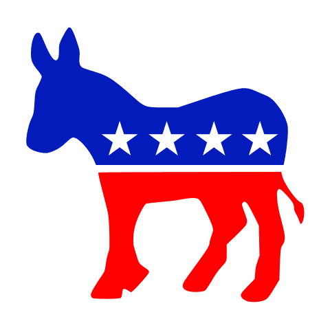
Partido Democrata
O outro grande partido dos EUA, de centro-esquerda, defende ampliar a saúde pública, direitos civis e reprodutivos, sindicatos, regulação ambiental e alianças internacionais, com base em minorias, jovens e grandes cidades.
Ver perfil
Partido Democrata (era New Deal)
1933–1945Partido de Franklin Roosevelt no poder entre 1933 e 1945, ampliou o Estado com o New Deal: previdência, regulação bancária, obras públicas e sindicatos, numa coalizão com o Sul segregacionista, e conduziu os EUA na Segunda Guerra.
Ver perfil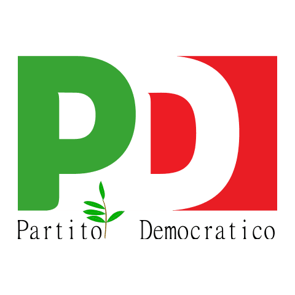
Partido Democrático (PD)
Principal partido de centro-esquerda italiano, de Elly Schlein, defende a social-democracia, direitos civis, imigrantes, a Europa e a transição verde, com herança comunista e democrata-cristã, e é oposição a Meloni.
Ver perfilPartido Democrático Alemão (DDP)
1918–1933Partido liberal de esquerda da República de Weimar, com Hugo Preuss, Theodor Wolff e Walther Rathenau. Defendeu a Constituição de 1919, a democracia parlamentar, a economia de mercado com responsabilidade social, os direitos civis e a reconciliação europeia, até desaparecer em 1933.
Ver perfilPartido Democrático da Coreia (DPK)
Partido de centro-esquerda liberal sul-coreano, de Moon Jae-in e do presidente Lee Jae-myung, eleito em 2025. Defende bem-estar social, reforma dos chaebols, direitos trabalhistas, liberdades civis e engajamento com a Coreia do Norte, mantendo a aliança com os EUA.
Ver perfilPartido Democrático Liberal (FDP)
Partido liberal alemão de Christian Lindner, defende livre mercado, impostos baixos, disciplina fiscal, digitalização e liberdades individuais, teve papel no governo semáforo e perdeu o Bundestag em 2025.
Ver perfil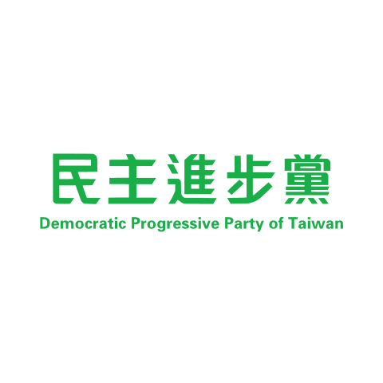
Partido Democrático Progressista (DPP)
Partido taiwanês fundado em 1986 contra a lei marcial do KMT, hoje no poder com Lai Ching-te. Defende a identidade taiwanesa, a soberania de fato e o alinhamento com os EUA, direitos civis (casamento igualitário em 2019) e a transição energética.
Ver perfilPartido Democrático Republicano (PDR)
1963–1980Partido de Park Chung-hee, no poder na Coreia do Sul de 1963 a 1980. Sustentou uma ditadura desenvolvimentista, com planos quinquenais, industrialização exportadora, chaebols, anticomunismo, polícia política (KCIA) e a Constituição Yushin de 1972.
Ver perfilPartido Democrático Trabalhista (PDT)
Partido trabalhista fundado por Leonel Brizola em 1979, herda o legado de Getúlio Vargas e defende nacionalismo econômico, educação integral em tempo integral e direitos trabalhistas, hoje em campo próximo ao governo Lula.
Ver perfil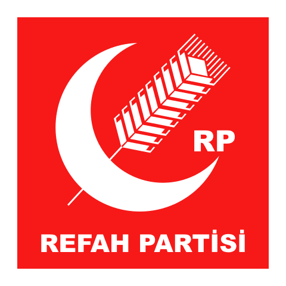
Partido do Bem-Estar (Refah)
1983–1998Partido islamista turco de Erbakan, venceu as eleições de 1995 e chefiou o governo de coalizão (1996–97). Defendia uma economia sem juros, laços com o mundo muçulmano e mais espaço ao islã na vida pública, até ser dissolvido em 1998 por violar o secularismo.
Ver perfil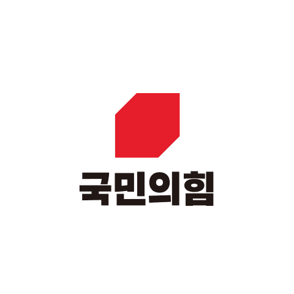
Partido do Poder Popular (PPP)
Partido conservador sul-coreano, herdeiro do Saenuri e de Park Geun-hye, do presidente Yoon Suk Yeol (2022–2025). Defende economia de mercado e empresas, aliança com EUA e Japão, linha dura com a Coreia do Norte e valores tradicionais, e seguiu Yoon na lei marcial de 2024.
Ver perfil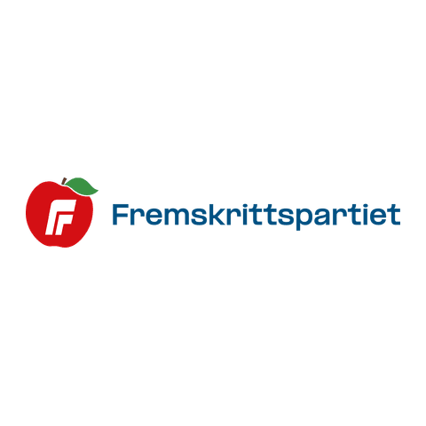
Partido do Progresso (FrP)
Partido populista de direita da Noruega fundado em 1973, liberal-conservador. Defende impostos baixos, menos Estado, uso do petróleo, imigração e asilo restritos, punições mais duras e ceticismo com a agenda climática e a UE.
Ver perfilPartido dos Trabalhadores (PT)
Partido de esquerda fundado em 1980 por sindicalistas e movimentos sociais, governa o Brasil com Lula desde 2023 e defende Estado indutor, programas sociais como o Bolsa Família, sindicatos fortes e política externa multilateral.
Ver perfilPartido dos Trabalhadores da Coreia (PTC)
Partido único da Coreia do Norte, no poder desde 1948 sob a dinastia Kim. Governa pela ideologia Juche e pela política Songun (militar em primeiro lugar), com culto à personalidade, economia planificada, programa nuclear e controle total da sociedade.
Ver perfil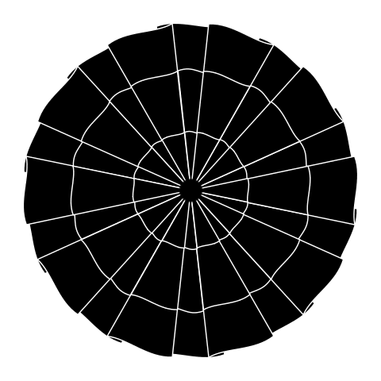
Partido Federalista
1791–1824Partido de Alexander Hamilton e John Adams, dominou o governo dos EUA até 1801: defendia Estado central forte, banco nacional, comércio e indústria, aproximação com a Grã-Bretanha e as Leis de Estrangeiros e Sedição, contra Jefferson.
Ver perfil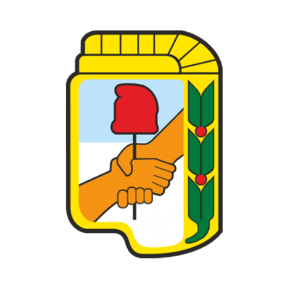
Partido Justicialista
Partido fundado por Juan Perón em 1946, núcleo do peronismo, com justiça social, sindicatos fortes, nacionalismo econômico e Estado de bem-estar, mas heterogêneo, com alas kirchnerista, menemista liberal e conservadora, e alterna no poder.
Ver perfil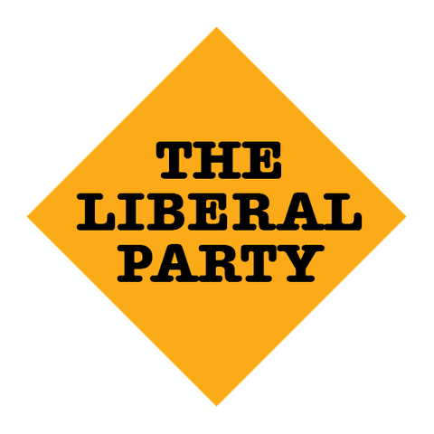
Partido Liberal (era vitoriana)
1859–1901Partido de Gladstone e Palmerston que dominou a política vitoriana, defendendo livre comércio, austeridade, reformas eleitorais, liberdade religiosa, 'Paz, Economia e Reforma' e o Home Rule irlandês, que o dividiu em 1886.
Ver perfil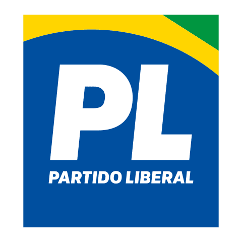
Partido Liberal (PL)
Maior bancada da Câmara e partido de Jair Bolsonaro desde 2021, reúne direita conservadora e liberalismo econômico, com pauta de segurança pública, armamento civil, valores cristãos, base evangélica e crítica ao STF.
Ver perfilPartido Liberal Democrata (PLD)
Partido conservador que governa o Japão quase sem interrupção desde 1955. Defende a aliança com os EUA, desenvolvimento liderado por empresas, nacionalismo cultural moderado e revisão da Constituição pacifista, com facções internas e laços com o empresariado.
Ver perfil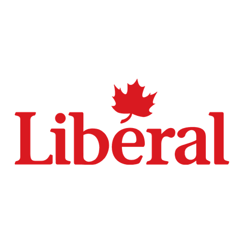
Partido Liberal do Canadá
Partido de centro e governista na maior parte da história canadense, de Pearson, dos Trudeau e de Mark Carney, defende liberalismo social, multiculturalismo, saúde pública, direitos das minorias e mercado regulado.
Ver perfil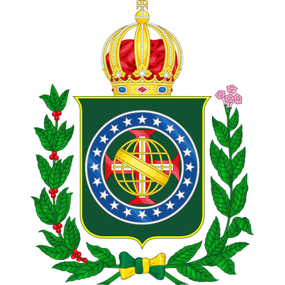
Partido Liberal do Império (Luzias)
1831–1889Partido do Império do Brasil conhecido como Luzias. Defendeu a autonomia das províncias, a limitação do Poder Moderador, o parlamentarismo, a liberdade de comércio e de imprensa, a imigração europeia e a abolição gradual, com voto censitário.
Ver perfilPartido Libertário
Terceiro maior partido dos EUA, fundado em 1971, defende Estado mínimo, livre mercado, não intervencionismo militar, fim da guerra às drogas e liberdades civis e individuais amplas, dividido entre alas moderada e conservadora.
Ver perfilPartido Missão (MISSÃO)
Partido fundado pelo MBL e presidido por Renan Santos, une ajuste fiscal com Estado forte na segurança (Direito Penal do Inimigo), reindustrialização (ZEEs, terras raras) e consolidação municipal. Elegeu um deputado federal em 2026.
Ver perfilPartido Nacional (era do apartheid)
1948–1994Partido do governo sul-africano de 1948 a 1994, nacionalismo africâner que instituiu o apartheid: segregação racial legal, domínio da minoria branca, anticomunismo e repressão violenta à oposição negra.
Ver perfilPartido Nacional Escocês (SNP)
Partido social-democrata e independentista escocês, dominante na política da Escócia desde 2007, defende a independência, a permanência na União Europeia, serviços públicos fortes e políticas progressistas em costumes e meio ambiente.
Ver perfil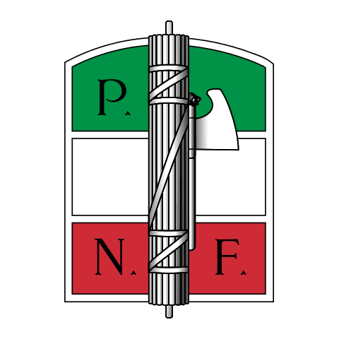
Partido Nacional Fascista (PNF)
1921–1943Partido de Benito Mussolini, no poder na Itália de 1922 a 1943 e partido único após 1926. Impôs ditadura totalitária, corporativismo, culto ao Duce, expansão colonial, aliança com Hitler e leis raciais (1938).
Ver perfilPartido Nacional Libertário (PNL)
Partido chileno fundado em 2024 por Johannes Kaiser, de direita radical paleolibertária e pinochetista. Defende mercado livre e Estado mínimo, propriedade privada, ordem e segurança, controle duro da imigração e rejeição ao progressismo e ao globalismo.
Ver perfilPartido Nazista (NSDAP)
1920–1945Partido de Adolf Hitler, fundado em 1920, que virou partido único da Alemanha em 1933 e impôs ditadura totalitária, racismo biológico e antissemitismo, rearmamento e expansão militar até a derrota em 1945.
Ver perfil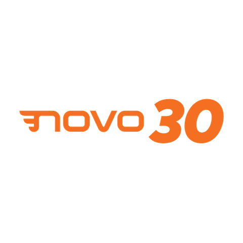
Partido Novo (NOVO)
Partido liberal fundado em 2011 que defende Estado mínimo, privatizações, menos impostos e meritocracia, recusa o fundo partidário e tem em Romeu Zema, governador de Minas Gerais, sua principal liderança.
Ver perfil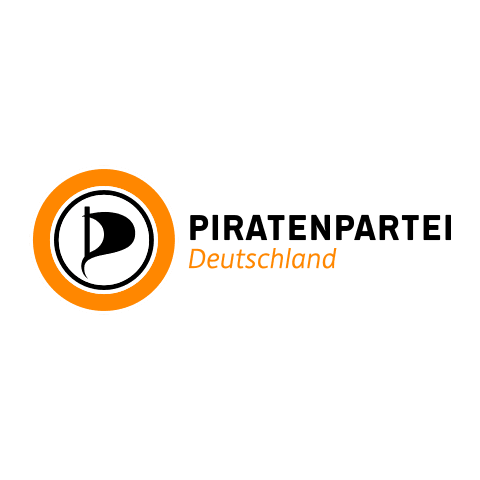
Partido Pirata da Alemanha (PIRATEN)
Partido alemão fundado em 2006, inspirado no sueco, que defende privacidade, transparência, direitos digitais, reforma do direito autoral e democracia direta por plataformas online. Entrou no parlamento de Berlim em 2011 e perdeu espaço depois de 2013.
Ver perfilPartido Popular (PP)
Principal partido de centro-direita espanhol, de Aznar, Rajoy e Feijóo, defende economia de mercado, a unidade da Espanha contra o separatismo, a monarquia e a Europa, com conservadorismo moderado nos costumes.
Ver perfil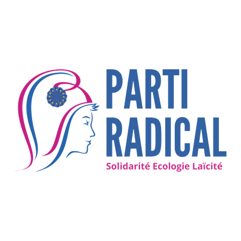
Partido Radical (Terceira República)
1901–1940Partido Republicano, Radical e Radical-Socialista, eixo da Terceira República francesa. Defendeu a laicidade (lei de 1905), a escola pública, a pequena propriedade, o imposto de renda, o parlamentarismo e a assimilação republicana, e esteve nos governos de Herriot e Daladier.
Ver perfil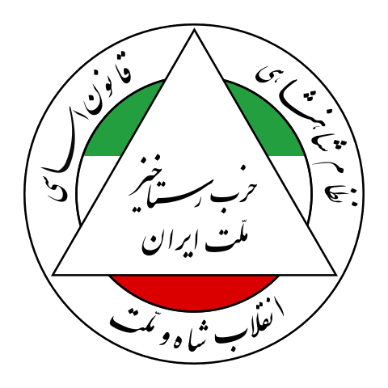
Partido Rastakhiz
1975–1978Partido único criado pelo Xá em 1975 no Irã, de filiação obrigatória e lema 'Revolução do Xá e do Povo'. Serviu de máquina de mobilização e propaganda da monarquia, perseguiu comerciantes e clero, e foi dissolvido em 1978.
Ver perfil
Partido Republicano
Um dos dois grandes partidos dos EUA, de direita e hoje sob Donald Trump, defende impostos baixos, desregulação, controle da imigração, tarifas, valores cristãos tradicionais e direito ao porte de armas.
Ver perfil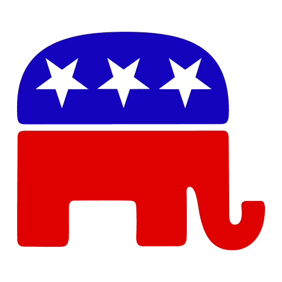
Partido Republicano (era New Deal)
1933–1945Oposição a Franklin Roosevelt entre 1933 e 1945, defendia orçamento equilibrado, menos poder federal e livre empresa, com ala isolacionista e outra internacionalista, contra o New Deal e os sindicatos fortes.
Ver perfilPartido Republicano de Chile
Partido de direita radical fundado por José Antonio Kast em 2019, defende ordem, segurança, controle da imigração, valores cristãos e família, livre mercado e menos impostos, com herança de parte da direita pinochetista.
Ver perfil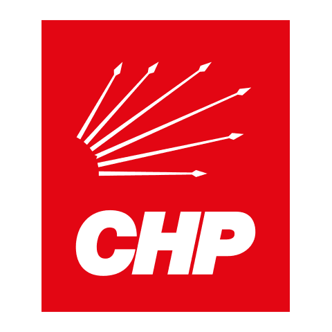
Partido Republicano do Povo (CHP, era kemalista)
1923–1938Partido único fundado por Atatürk, que governou a Turquia de 1923 a 1938 pelos seis princípios (republicanismo, nacionalismo, populismo, estatismo, laicismo e reformismo). Impôs secularização forçada, estatismo e turquificação.
Ver perfilPartido Republicano Paulista (PRP)
1873–1937Partido da elite cafeeira de São Paulo fundado em 1873, dominou a política da República Velha pela aliança do café com leite, defendeu federalismo, ordem, livre comércio e exportação agrária, e perdeu o poder com a Revolução de 1930.
Ver perfilPartido Revolucionário Institucional (PRI)
Partido mexicano fundado em 1929, hegemônico por 71 anos e hoje de centro. Herda o nacionalismo revolucionário e o corporativismo, mas aderiu ao livre comércio e à abertura econômica, e é laico e pragmático.
Ver perfil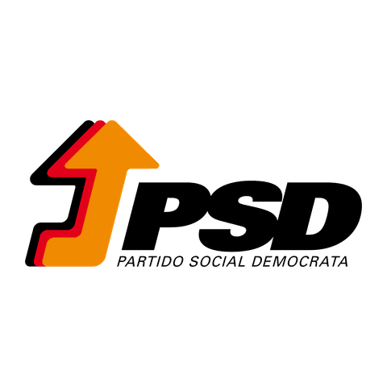
Partido Social Democrata (PSD)
Principal partido de centro-direita de Portugal, fundado em 1974 como PPD. Liberal-conservador apesar do nome, lidera a Aliança Democrática e defende baixa de impostos, reformas do Estado, UE e NATO, com controle migratório mais firme.
Ver perfilPartido Social Democrático (PSD histórico)
1945–1965Partido de centro-direita fundado em 1945 pelos interventores de Vargas, de base rural e oligárquica, aliado ao PTB em governos de 1945 a 1964, teve Dutra e Juscelino Kubitschek e defendeu desenvolvimento, ordem constitucional e conciliação.
Ver perfilPartido Social Democrático (PSD)
Partido de centro fundado por Gilberto Kassab em 2011, pragmático e sem ideologia definida, que integra governos de qualquer campo. Defende economia de mercado, estabilidade institucional e federalismo, com lideranças como Ratinho Jr. e Eduardo Paes.
Ver perfil
Partido Social-Democrata da Alemanha (era Weimar)
1918–1933Maior partido da República de Weimar, com Friedrich Ebert e Otto Wels. Defendeu a democracia parlamentar, a jornada de 8 horas, o seguro-desemprego e o Estado social, reprimiu os espartaquistas e foi o único a votar contra os plenos poderes de Hitler em 1933.
Ver perfil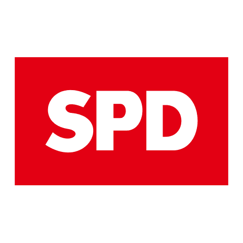
Partido Social-Democrata da Alemanha (SPD)
Mais antigo partido alemão, de Brandt, Schmidt, Schröder e Scholz, defende o Estado social, os sindicatos, a codeterminação e a Europa, com viés pró-mercado desde a Agenda 2010, e perdeu eleitores para AfD e Verdes.
Ver perfilPartido Socialismo e Liberdade (PSOL)
Fundado em 2004 por dissidentes do PT, é um partido de esquerda socialista democrática com pautas ecológica, feminista, antirracista e LGBT, federado à Rede, que apoia o governo Lula com posição crítica.
Ver perfilPartido Socialista (PS)
Partido social-democrata português fundado em 1973 por Mário Soares, pilar do regime democrático. Defende Estado social, SNS e escola públicas, contas equilibradas, UE e NATO, direitos civis e acolhimento regulado de imigrantes.
Ver perfil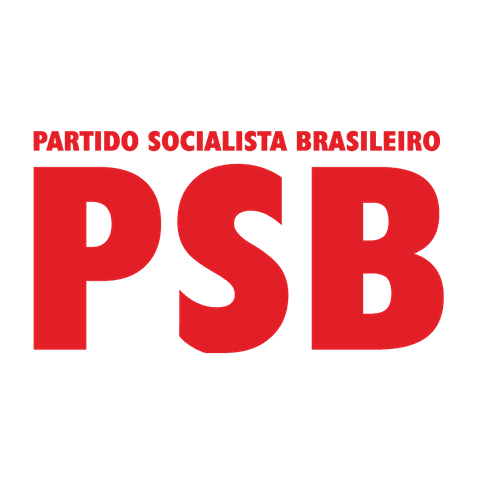
Partido Socialista Brasileiro (PSB)
Partido de centro-esquerda fundado em 1947 e refundado em 1985, de social-democracia e socialismo democrático, aliado de Lula. Defende Estado de bem-estar, desenvolvimento regional e direitos civis, com Geraldo Alckmin na vice-presidência e forte base em Pernambuco.
Ver perfilPartido Socialista dos Trabalhadores Unificado (PSTU)
Partido trotskista fundado em 1994, defende a revolução socialista e a independência de classe, rompe com os governos do PT, atua no sindicalismo combativo da CSP-Conlutas e vê o capitalismo como causa das opressões.
Ver perfil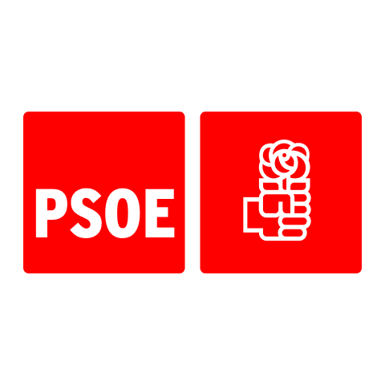
Partido Socialista Operário Espanhol (PSOE)
Partido social-democrata de Pedro Sánchez, governa a Espanha em coalizão, defende o Estado de bem-estar, direitos civis, aborto e casamento igualitário, a transição ecológica e a Europa, e negocia com partidos regionais.
Ver perfil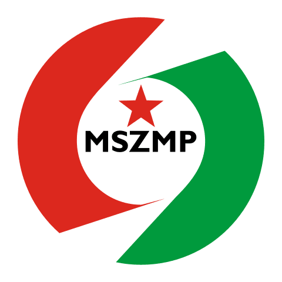
Partido Socialista Operário Húngaro (MSZMP)
1956–1989Partido único da Hungria sob János Kádár, criado após a revolução de 1956 esmagada pelos soviéticos. Combinou ditadura de partido e Pacto de Varsóvia com o 'comunismo do goulash', reformas de mercado parciais e repressão suavizada.
Ver perfil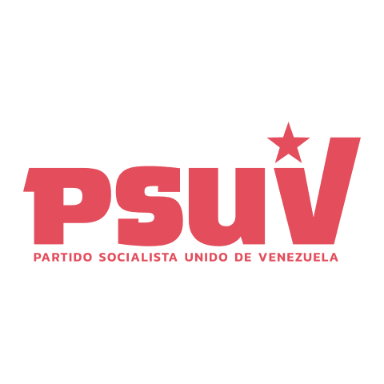
Partido Socialista Unido da Venezuela (PSUV)
Partido do chavismo e de Nicolás Maduro, no poder desde 1999 sob diferentes siglas, une socialismo bolivariano, nacionalismo petroleiro, controle estatal e forte aparato militar, em um regime acusado de autoritarismo.
Ver perfil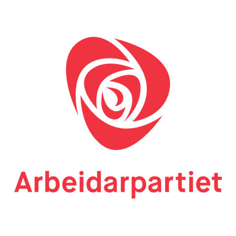
Partido Trabalhista (Ap)
Partido social-democrata norueguês de 1887, no governo com Jonas Gahr Støre. Defende o modelo nórdico de bem-estar, sindicatos fortes, controle público do petróleo e do fundo soberano, NATO e imigração regulada com integração.
Ver perfil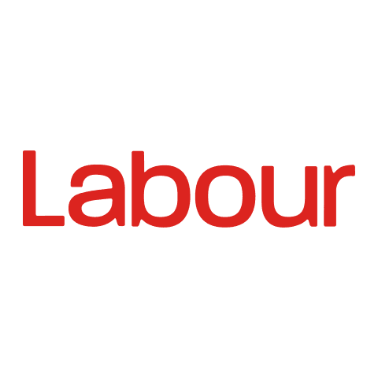
Partido Trabalhista (Labour)
Partido de centro-esquerda de Keir Starmer, governa o Reino Unido desde 2024, defende o NHS, os sindicatos, investimento público e direitos sociais, com disciplina fiscal e postura pró-OTAN e pró-Europa.
Ver perfil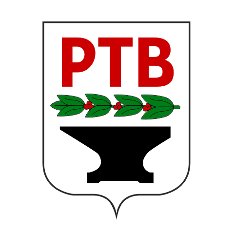
Partido Trabalhista Brasileiro (PTB)
1945–1954Criado em 1945 por Getúlio Vargas a partir do sindicalismo oficial do Ministério do Trabalho, defendia a CLT, o salário mínimo, o nacionalismo econômico e a Petrobras, e foi a base do retorno de Vargas ao poder em 1951.
Ver perfilPartido Unionista Democrático (DUP)
Partido unionista e conservador da Irlanda do Norte, fundado por Ian Paisley em 1971, defende a união com o Reino Unido, valores protestantes e morais tradicionais e a oposição ao protocolo do Brexit, e é o maior partido unionista da região.
Ver perfil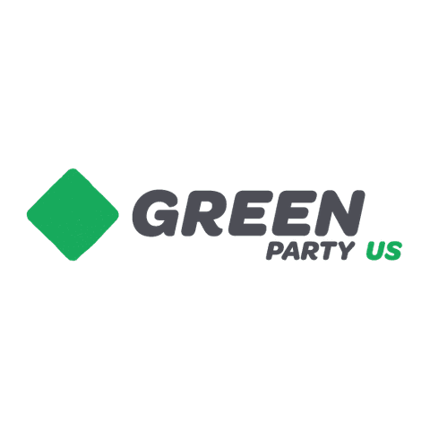
Partido Verde
Partido ecologista de esquerda fundado em 1991, de Ralph Nader e Jill Stein, defende o Green New Deal, saúde pública universal, justiça social, democracia de base, não violência e fim do duopólio democrata-republicano.
Ver perfilPartido Verde (Greens)
Partido ecologista de esquerda da Inglaterra e do País de Gales, defende transição ecológica, redistribuição de renda, serviços públicos, representação proporcional e direitos de minorias, e elegeu quatro deputados em 2024.
Ver perfilPlaid Cymru
Partido nacionalista galês de centro-esquerda fundado em 1925. Defende a independência de Gales, a língua galesa, serviços públicos, energia renovável comunitária e a permanência na UE, e governa em aliança no Senedd.
Ver perfilPodemos
Partido de esquerda populista nascido do movimento 15-M em 2014, de Pablo Iglesias e Ione Belarra, defende a taxação dos ricos, moradia, serviços públicos, direitos feministas e contra a casta, em coalizão com o PSOE.
Ver perfilProgressistas (PP)
Partido de centro-direita e núcleo do centrão, herdeiro da Arena e do PDS, hoje liderado por Ciro Nogueira e Arthur Lira. Defende economia de mercado, agronegócio e conservadorismo moral, com forte apoio às emendas e adesão a qualquer governo.
Ver perfilReagrupamento Nacional (RN)
Partido de direita radical francês de Marine Le Pen e Jordan Bardella, defende preferência nacional, imigração zero, soberania contra a União Europeia, segurança e identidade, com política social protecionista.
Ver perfilReconquête
Partido francês de extrema-direita fundado em 2021 por Éric Zemmour. Defende imigração zero e remigração, identidade cristã e nacional, soberania contra a UE, autoridade do Estado, famílias e natalidade, reindustrialização e menos impostos.
Ver perfilReform UK
Partido populista de direita de Nigel Farage, defende o fim da imigração ilegal, impostos menores, menos regulação e as metas de carbono, com soberania nacional e crítica ao establishment, e cresceu muito desde 2024.
Ver perfilRenaissance
Partido centrista de Emmanuel Macron, defende liberalismo econômico com reformas, aposta na Europa, na inovação e na indústria, na OTAN e no apoio à Ucrânia, e ocupa o centro entre esquerda e direita.
Ver perfilRepublicanos
Partido ligado à Igreja Universal do Reino de Deus, fundado em 2005 como PRB, de base evangélica e perfil de centrão. Defende costumes conservadores, economia de mercado moderada e segurança, e já integrou governos de Lula e Bolsonaro.
Ver perfilRhodesian Front
1962–1980Partido da minoria branca da Rodésia, liderado por Ian Smith, que proclamou a independência unilateral em 1965. Defendeu a segregação racial, o anticomunismo e a defesa da 'civilização cristã ocidental' contra o nacionalismo africano, até a guerra civil e o fim do regime em 1980.
Ver perfilRússia Unida
Partido de poder de Vladimir Putin, domina a Duma e os governos regionais desde 2001, defende o Estado forte, o patriotismo, a ortodoxia e valores tradicionais, a guerra na Ucrânia e a soberania contra o Ocidente.
Ver perfilShas
Partido ultraortodoxo sefardita fundado em 1984 pelo rabino Ovadia Yosef e hoje liderado por Aryeh Deri. Defende a Torá e a halachá, escolas religiosas, assistência social aos mizrahim pobres e isenção do serviço militar, com pragmatismo em coalizões.
Ver perfilSinn Féin
Partido republicano irlandês de esquerda, ex-braço político do IRA, de Mary Lou McDonald, defende a unificação da Irlanda, moradia pública, saúde, taxação e direitos sociais, e é a maior força do Parlamento irlandês.
Ver perfilSocialdemokraterna (S)
Partido Social-Democrata dos Trabalhadores da Suécia, fundado em 1889 e arquiteto do modelo de bem-estar sueco. Defende impostos altos, sindicatos fortes, UE e NATO, sociedade secular e igualitária e, hoje, controle migratório mais rígido.
Ver perfilSocialistas Democráticos da América (DSA)
Maior organização socialista dos EUA, com dezenas de milhares de membros e vereadores e deputados eleitos. Defende saúde pública universal, sindicatos fortes, Green New Deal e propriedade social, dentro e fora do Partido Democrata.
Ver perfilSumar
Plataforma de esquerda criada em 2023 por Yolanda Díaz que reúne Izquierda Unida, Comuns e outros partidos, defende redução da jornada de trabalho, salário mínimo, transição ecológica e direitos sociais, e integra o governo de Pedro Sánchez.
Ver perfilSyriza
Coalizão de esquerda grega de Alexis Tsipras, governou entre 2015 e 2019 e capitulou à austeridade da troika, defende o Estado social, direitos civis e a Europa, e perdeu espaço para a Nova Democracia.
Ver perfilUnião Brasil (UNIÃO)
Partido de centro-direita criado em 2022 pela fusão do DEM com o PSL, núcleo do centrão e hoje em federação com o PP. Defende economia de mercado, agronegócio e conservadorismo moral moderado, com ministros no governo Lula e ligações com o Congresso.
Ver perfilUnião Cívica Radical (UCR)
Partido centenário argentino, fundado em 1891, de Yrigoyen e Alfonsín, defende a democracia republicana, a classe média, a educação pública e as instituições, hoje centrista e dividido entre liberais e social-democratas em Juntos por el Cambio.
Ver perfilUnião Democrata-Cristã (CDU/CSU)
Partido democrata-cristão alemão de Adenauer, Kohl, Merkel e Friedrich Merz, defende economia social de mercado, a Europa, a OTAN, a ordem e a família, com ala conservadora, e lidera o governo alemão desde 2025.
Ver perfilUnião Democrática Nacional (UDN)
1945–1965Partido liberal-conservador de oposição a Vargas e ao trabalhismo entre 1945 e 1965, defendia a livre iniciativa, o anticomunismo e o combate à corrupção, tinha em Carlos Lacerda sua voz mais forte e apoiou o golpe de 1964.
Ver perfilUnião Nacional
1930–1974Partido único do Estado Novo português, criado por Salazar em 1930. Sustentou ditadura corporativista, catolicismo social, colonialismo ('Deus, Pátria, Família'), censura e polícia política (PIDE), sem eleições livres, até a Revolução dos Cravos.
Ver perfilUnião pela Pátria (UP)
Coligação peronista de centro-esquerda da Argentina, formada em 2023 em torno do Partido Justicialista e do kirchnerismo. Defende Estado de bem-estar, indústria nacional, controle econômico, soberania, direitos humanos e direitos civis.
Ver perfilUnião Social-Cristã (CSU)
Partido democrata-cristão da Baviera, irmão da CDU desde 1945, domina a política bávara com Franz Josef Strauß e Markus Söder, defende catolicismo, família, ordem, federalismo e economia de mercado, com linha mais conservadora que a CDU.
Ver perfilUnião Socialista Árabe
1962–1977Partido único criado por Nasser em 1962 como veículo do socialismo árabe. Nacionalizou a economia, fez reforma agrária, defendeu o pan-arabismo e o não alinhamento, e reprimiu islamistas e comunistas até a abertura de Sadat.
Ver perfilUnidade Popular (UP)
Partido de extrema-esquerda fundado em 2016 que defende o socialismo, a nacionalização dos bancos e dos setores estratégicos, a suspensão da dívida pública e a reforma agrária e urbana popular, ligado a movimentos de moradia.
Ver perfilVox
Partido espanhol de direita radical fundado em 2013, defende a unidade nacional contra o separatismo, restrição à imigração, família e valores católicos tradicionais, cortes de impostos e crítica à UE e ao feminismo.
Ver perfil
Movimentos
Movimentos políticos e sociais, de massas ou de vanguarda.
Ação Integralista Brasileira (AIB)
1932–1937Movimento fundado por Plínio Salgado em 1932, de lema 'Deus, Pátria e Família', defendia um Estado integral corporativista, nacionalismo, anticomunismo e moral católica, com milícia de camisas-verdes, até ser banido em 1937.
Ver perfilAction Française
1899–1944Movimento nacionalista francês fundado em 1899 e ideologicamente conduzido por Charles Maurras. Defende o 'nacionalismo integral', a monarquia hereditária e antiparlamentar, a descentralização, o antissemitismo e a ordem católica, embora agnóstico em doutrina.
Ver perfilAmerica First
Movimento nacionalista branco de Nick Fuentes, de seus seguidores chamados groypers, defende uma América cristã e branca, imigração zero, antissemitismo, rejeição de Israel e da elite republicana, e o fim das guerras no exterior.
Ver perfilBolcheviques
1903–1918Ala majoritária do Partido Operário Social-Democrata Russo, liderada por Lênin a partir de 1903. Defendeu um partido de revolucionários profissionais, a revolução proletária, a paz imediata e a tomada do poder em outubro de 1917, fundando a ditadura soviética.
Ver perfilCNT-FAI
1936–1939Aliança do sindicato anarcossindicalista CNT com a Federação Anarquista Ibérica, que fez a revolução social espanhola de 1936. Coletivizou fábricas e terras na Catalunha e em Aragão, formou milícias, entrou no governo republicano e foi derrotada em maio de 1937.
Ver perfilFalange Española
1933–1975Movimento fascista espanhol fundado por José Antonio Primo de Rivera em 1933, unificado por Franco em 1937 como partido único (FET y de las JONS). Nacionalismo imperial, sindicalismo vertical, Estado totalitário e catolicismo.
Ver perfilGuarda de Ferro (Movimento Legionário)
1927–1941Movimento fascista romeno fundado em 1927 por Corneliu Codreanu como Legião do Arcanjo Miguel. Combinou nacionalismo ortodoxo místico, antissemitismo, culto ao martírio e violência política, e foi esmagado depois da rebelião de 1941.
Ver perfilJacobinos
1789–1794Clube político radical da Revolução Francesa, liderado por Robespierre. Defendeu república unitária, soberania popular, virtude cívica e o Terror, com economia dirigida, descristianização e centralização, até a queda em Termidor (1794).
Ver perfilLes Identitaires
Movimento francês de extrema-direita identitária, fundado em 2002 como Bloc Identitaire e presidido por Fabrice Robert. Defende a remigração, a oposição à imigração e ao Islã e uma Europa de identidades étnicas; sua juventude foi dissolvida em 2021.
Ver perfilMovimento dos Trabalhadores Rurais Sem Terra (MST)
Maior movimento social do campo, nascido em 1984 com apoio da Igreja Católica, ocupa terras improdutivas para exigir reforma agrária, defende agroecologia e soberania alimentar e é aliado dos governos de esquerda.
Ver perfilNova Resistência (NR)
Organização política brasileira fundada em 2015 por Raphael Machado, inspirada na Quarta Teoria Política de Aleksandr Dugin. Nacional-revolucionária, antiliberal, antiamericana e eurasianista, é descrita por pesquisadores como neofascista.
Ver perfilNúcleo Nacional
Grupo espanhol de extrema-direita neonazista, surgido nos protestos contra a anistia em Madri (2023–24). Ultranacionalista e anti-imigração, tem estrutura hierárquica e ação de rua, e é investigado pela Guarda Civil por discurso de ódio.
Ver perfilOptimates
c. 133–44 a.C.Facção aristocrática conservadora da República Romana, defensora da autoridade do Senado, da tradição ancestral (mos maiorum) e da grande propriedade. Combateu as reformas agrárias dos Gracos e dos populares, com Sula e Catão, o Jovem.
Ver perfilPopulares
c. 133–44 a.C.Facção da República Romana que legislava por tribunos e assembleias contra o Senado, defendendo reforma agrária, distribuição de trigo, alívio de dívidas e direitos para os aliados itálicos, de Tibério Graco a Mário e César.
Ver perfilRashtriya Swayamsevak Sangh (RSS)
Organização paramilitar e voluntária hindu fundada em 1925 por Hedgewar, matriz ideológica do BJP e da hindutva. Mantém milhares de shakhas de disciplina e doutrina, trabalho social e rede de entidades, e foi banida após o assassinato de Gandhi.
Ver perfilRozwój Plus
Associação política criada em 2026 por Mateusz Morawiecki, ex-primeiro-ministro, após ruptura com Lei e Justiça (PiS). Conservadora e soberanista, defende desenvolvimento econômico, fronteiras fechadas e defesa forte, com clube parlamentar próprio.
Ver perfilUnião Britânica de Fascistas (BUF)
1932–1940Movimento fascista britânico fundado em 1932 por Oswald Mosley, com milícia de camisas-negras. Defendeu corporativismo, protecionismo imperial, nacionalismo e, a partir de 1934, antissemitismo, até ser proibido em 1940.
Ver perfil
Casas dinásticas
Dinastias e casas reais e imperiais, no poder ou pretendentes.
Casa de Al Nahyan
Família real de Abu Dhabi, no poder desde o século XVIII, preside os Emirados Árabes Unidos desde 1971 e governa uma monarquia federal rica em petróleo, com forte modernização e estabilidade, tolerância controlada e aliança militar com o Ocidente.
Ver perfilCasa de Al Sabah
Família real do Kuwait, no poder desde 1752; o emir governa um emirado com Constituição e Assembleia eleita, mas com poder de dissolvê-la. Estado de bem-estar petrolífero, neutralidade e aliança com os EUA.
Ver perfilCasa de Al Thani
Família real do Catar, no poder desde o século XIX; o emir governa uma monarquia hereditária de gás natural, riqueza soberana, soft power (Al Jazeera, Copa de 2022), base americana, mediação regional e islã conservador.
Ver perfilCasa de Alaouite
Dinastia reinante do Marrocos desde 1666; o rei é chefe de Estado, comandante dos crentes e do Exército. Monarquia executiva, islã sunita moderado, abertura econômica, aliança com Ocidente e Israel e controle do Saara.
Ver perfilCasa de Bernadotte
Família real da Suécia desde 1818, de origem francesa. Monarquia sem poder político desde 1974, símbolo do Estado de bem-estar nórdico, da neutralidade histórica e da sociedade secular, aberta e igualitária.
Ver perfilCasa de Bonaparte
1804–1870Dinastia criada por Napoleão, que governou a França como imperador entre 1804 e 1815 e, com Napoleão III, de 1852 a 1870, impôs o Código Civil, a centralização, o autoritarismo plebiscitário e guerras que remodelaram a Europa.
Ver perfilCasa de Bourbon (ramo espanhol)
Dinastia que reina na Espanha desde 1700, de Filipe V a Felipe VI, passou do absolutismo ao constitucionalismo, foi restaurada por Franco em 1975 e Juan Carlos I conduziu a transição à democracia em 1978 como monarquia parlamentar.
Ver perfilCasa de Bourbon (ramo francês)
1589–1792Dinastia que reinou na França de 1589 a 1792 e de 1814 a 1830, de Henrique IV a Luís XIV, o Rei Sol, fez da monarquia absoluta de direito divino o modelo europeu e foi derrubada pela Revolução Francesa.
Ver perfilCasa de Bragança
1640–1910Dinastia que reinou em Portugal de 1640 a 1910 e no Brasil, restaurou a independência da Espanha, comandou o império colonial e passou do absolutismo à monarquia constitucional, caindo com a República em 1910.
Ver perfilCasa de Habsburgo
1867–1918Dinastia católica que governou a Áustria-Hungria, defendia a monarquia hereditária multinacional, a autoridade do imperador, a aliança com a Igreja e a unidade do império, até a abdicação de Carlos I em 1918.
Ver perfilCasa de Habsburgo (ramo espanhol)
1516–1700Ramo espanhol da dinastia, de Carlos I a Carlos II. Sustentou a monarquia católica universal, a Contrarreforma, a Inquisição e um império mundial financiado pela prata americana, com guerras na Europa, bancarrotas e centralismo castelhano até a extinção em 1700.
Ver perfilCasa de Hanôver
1714–1901Dinastia alemã que reinou no Reino Unido de 1714 a 1901, de Jorge I à rainha Vitória, consolidou a monarquia constitucional, o Parlamento, a revolução industrial e o Império Britânico, de tradição protestante anglicana.
Ver perfilCasa de Hohenzollern
1701–1918Dinastia alemã que governou Brandemburgo, a Prússia e o Império Alemão, de Frederico, o Grande, a Guilherme II, construiu um Estado militar e burocrático de tradição protestante e unificou a Alemanha sob Bismarck até 1918.
Ver perfilCasa de Liechtenstein
Dinastia reinante do Principado de Liechtenstein desde 1719, hoje com o príncipe Hans-Adam II e seu filho Alois como regente. Monarquia constitucional com amplos poderes de veto, católica, neutra e centro financeiro de impostos baixos.
Ver perfilCasa de Médici
1434–1737Dinastia de banqueiros e governantes de Florença, de Cosme a Lourenço, o Magnífico, e depois grão-duques da Toscana, financiou o Renascimento e a arte, alcançou o papado e a rainha da França e dominou a política italiana de 1434 a 1737.
Ver perfilCasa de Orange
1572–1795Linhagem de estatúderes da República Holandesa, de Guilherme, o Taciturno, a Guilherme V. Liderou a revolta contra a Espanha e o Exército da República, defendeu o calvinismo e a defesa nacional, e disputou o poder com o patriciado mercantil dos Estados.
Ver perfilCasa de Orange-Nassau
Família real dos Países Baixos desde Guilherme de Orange, líder da revolta contra a Espanha no século XVI, hoje monarquia constitucional liderada por Willem-Alexander, símbolo da unidade nacional, do calvinismo histórico e da tolerância.
Ver perfilCasa de Orléans e Bragança
Ramo da dinastia imperial brasileira, descendente de Dom Pedro II, que mantém pretendentes ao trono e defende a monarquia parlamentar no Brasil, com tradição de ligação à Igreja Católica.
Ver perfilCasa de Osman
1299–1922Dinastia imperial otomana de 1299 a 1922, de Osman I a Mehmed VI. Governou como sultões e califas, expandiu o império pela Anatólia, Bálcãs e mundo árabe, administrou minorias pelo sistema de millets e tentou reformas (Tanzimat) até a abolição em 1922.
Ver perfilCasa de Romanov
1613–1917Dinastia imperial da Rússia de 1613 a 1917, de Miguel I a Nicolau II. Sustentou a autocracia, a Igreja Ortodoxa e a expansão territorial, aboliu a servidão em 1861, permitiu uma Duma limitada em 1906 e caiu na Revolução de 1917.
Ver perfilCasa de Saud
Dinastia que governa a Arábia Saudita desde 1932, monarquia absoluta aliada ao wahabismo, com poder no petróleo, guardiã das cidades santas de Meca e Medina e aliada estratégica dos Estados Unidos, hoje sob o príncipe Mohammed bin Salman.
Ver perfilCasa de Stuart
1371–1714Dinastia escocesa que reinou na Escócia e, de 1603 a 1714, na Inglaterra, defendeu o direito divino dos reis contra o Parlamento, foi derrubada na Guerra Civil e na Revolução Gloriosa e deixou o Reino Unido unido.
Ver perfilCasa de Tudor
1485–1603Dinastia inglesa de 1485 a 1603, de Henrique VII a Elizabeth I, centralizou o poder real, rompeu com Roma na Reforma de Henrique VIII, criou a Igreja da Inglaterra e fez do país uma potência naval e comercial.
Ver perfilCasa de Windsor
Família real britânica desde 1917, de George V a Charles III, reina como monarquia constitucional sem poder político, chefe de Estado de quinze reinos e da Commonwealth, símbolo de continuidade, da Igreja da Inglaterra e do dever público.
Ver perfilCasa Imperial do Japão
Mais antiga monarquia hereditária contínua do mundo, a linhagem do Crisântemo reina no Japão há mais de mil e quinhentos anos, hoje como símbolo do Estado e da unidade do povo, sem poder político, ligada ao xintoísmo.
Ver perfilCasa Pahlavi
1925–1979Dinastia imperial do Irã de 1925 a 1979, de Reza Xá a Mohammad Reza Pahlavi. Impôs modernização autoritária, nacionalismo persa, secularização e aliança com o Ocidente, com polícia política (SAVAK), até a Revolução Islâmica.
Ver perfilDinastia Cajar
1789–1925Dinastia turcomana que governou a Pérsia de 1789 a 1925. Monarquia xiita fraca e tribal, perdeu territórios para a Rússia, concedeu monopólios a estrangeiros, enfrentou a Revolução Constitucional (1906) e foi deposta por Reza Xá.
Ver perfilDinastia Qing (Manchu)
1644–1912Última dinastia imperial da China (1644–1912), de origem manchu, expandiu o império até Xinjiang, Tibete e Mongólia, governou por burocracia confuciana e foi derrotada nas Guerras do Ópio e derrubada pela Revolução de 1911.
Ver perfilXogunato Tokugawa
1603–1868Governo militar hereditário do clã Tokugawa no Japão, de 1603 a 1868. Impôs paz interna, hierarquia de castas, controle dos daimiôs, neoconfucionismo e isolamento (sakoku), proibindo o cristianismo, até a Restauração Meiji.
Ver perfil
Organizações armadas
Grupos armados e insurgentes, com a doutrina e a prática declaradas.
Al-Qaeda
Organização jihadista salafista fundada por Osama bin Laden em 1988, defende um califado global, guerra contra o Ocidente e regimes considerados apóstatas e a lei islâmica rígida, com ataques como o de 11 de setembro de 2001.
Ver perfilBatalhão Azov
Unidade militar ucraniana surgida em 2014 de voluntários nacionalistas, depois integrada à Guarda Nacional e ao Exército. Une disciplina militar, nacionalismo ucraniano e defesa contra a Rússia, com histórico e símbolos de extrema-direita controversos.
Ver perfilEstado Islâmico (ISIS)
Organização jihadista salafista que proclamou um califado em 2014 sobre partes do Iraque e da Síria, sob Abu Bakr al-Baghdadi. Impôs a sharia extrema, escravizou iazidis, praticou execuções públicas e atentados globais, e perdeu o território em 2019.
Ver perfilExército Branco (Movimento Branco)
1917–1923Coalizão antibolchevique de monarquistas, liberais e cossacos que lutou a guerra civil russa (Denikin, Kolchak, Wrangel). Defendia a 'Rússia una e indivisível', a ordem e a Igreja, sem programa político claro, e perdeu para o Exército Vermelho.
Ver perfilExército Vermelho
1918–1946Forças armadas soviéticas criadas em 1918 por Trótski, sob controle de comissários do Partido. Venceram a guerra civil russa e a Alemanha nazista, ocuparam o Leste Europeu e foram instrumento de repressão e purgas até 1946.
Ver perfilEZLN (Exército Zapatista de Libertação Nacional)
Movimento indígena que se levantou em Chiapas em 1994, exige terra, autonomia e direitos indígenas, governa comunidades por juntas de bom governo e caracóis, contra o neoliberalismo e os partidos, com o lema mandar obedecendo.
Ver perfilHamas
Organização islamista palestina fundada em 1987 como ramo da Irmandade Muçulmana, que governa Gaza desde 2007. Combina serviços sociais, política e a Brigada Al-Qassam, defende a resistência armada contra Israel e foi autora do ataque de 7 de outubro de 2023.
Ver perfilHezbollah
Organização xiita libanesa fundada em 1982, com braço armado e partido no Parlamento, inspirada na revolução iraniana. Combate Israel, mantém uma rede de serviços sociais no sul do Líbano e do vale do Bekaa e é apoiada pelo Irã.
Ver perfilMakhnovistas (Exército Insurgente Revolucionário da Ucrânia)
1918–1921Exército camponês anarquista de Néstor Makhno, que controlou o sul da Ucrânia entre 1918 e 1921 sob bandeira negra. Combateu alemães, brancos e vermelhos, defendeu sovietes livres, autogestão camponesa e comunismo libertário, e foi esmagado pelos bolcheviques.
Ver perfilOrdem dos Cavaleiros Teutônicos
1190–1525Ordem militar e religiosa cruzada fundada em 1190 em Acre, que conquistou e cristianizou a Prússia e o Báltico, formou um Estado monástico e combateu a Polônia-Lituânia até a derrota em Grunwald (1410) e a secularização em 1525.
Ver perfilOrdem dos Templários
1119–1312Ordem militar cristã fundada em 1119 para proteger peregrinos em Jerusalém, isenta da autoridade de reis e bispos e subordinada ao papa. Criou uma rede bancária europeia e foi destruída por Filipe IV e Clemente V (1312).
Ver perfilSchutzstaffel (SS)
1925–1945Organização paramilitar de elite do Partido Nazista, comandada por Heinrich Himmler. Controlou a polícia política e os campos de concentração, formou a Waffen-SS, executou o Holocausto e a ocupação do Leste, com ideologia racial e lealdade pessoal a Hitler.
Ver perfilTalibã
Movimento islamista pashtun deobandi fundado em 1994, que governou o Afeganistão em 1996–2001 e retomou o poder em 2021. Impõe sharia rígida, restringe a educação e o trabalho das mulheres, rejeita partidos e eleições e é liderado pelo emir Hibatullah Akhundzada.
Ver perfil
Nenhum perfil encontrado
Tente outro termo ou limpe os filtros.